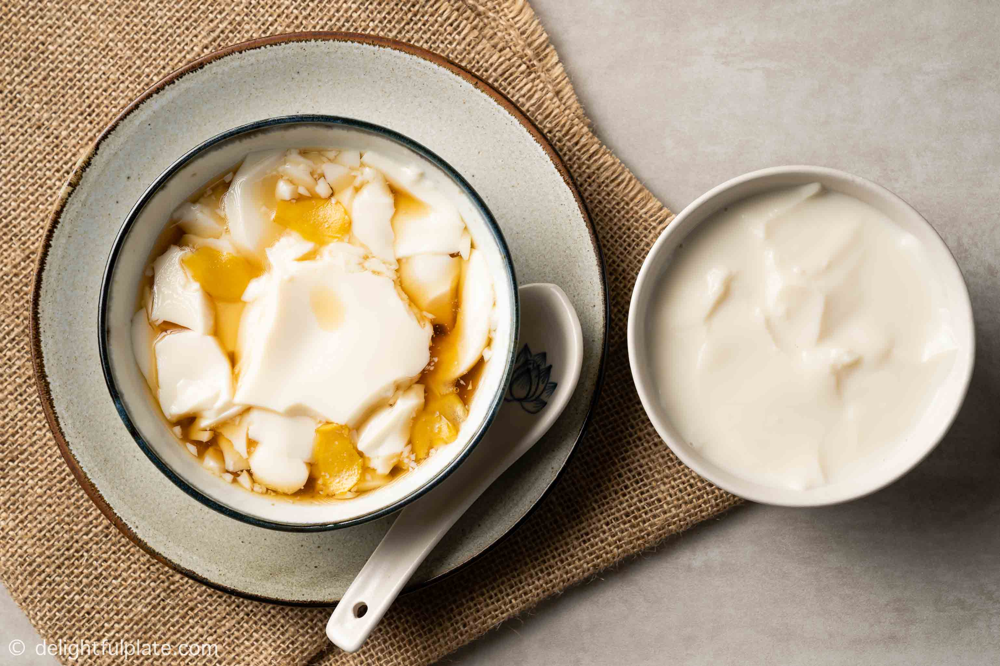

Dou hua/dou fu fa is a popular Asian dessert consisting of creamy tofu topped with various savory or sweet garnishes. It is made with coagulated soy milk to create a tofu product with a mild taste and an incredibly soft consistency. Like other varieties, soft tofu probably originated in China, but it has soon spread out to other Asian countries where it still represents one of the most versatile sweet treats.
Meal prep time : 15 minutes
Servings : 2